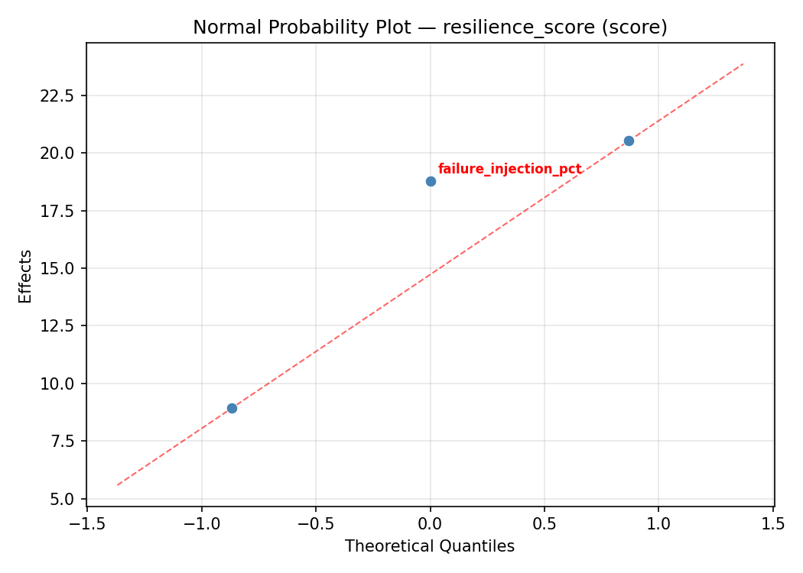
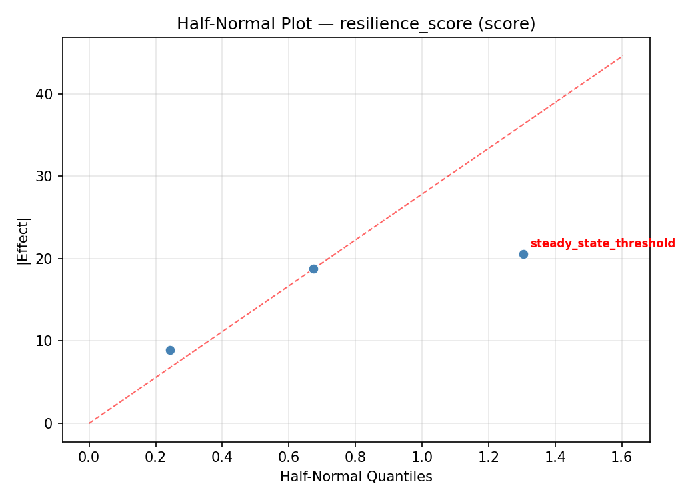
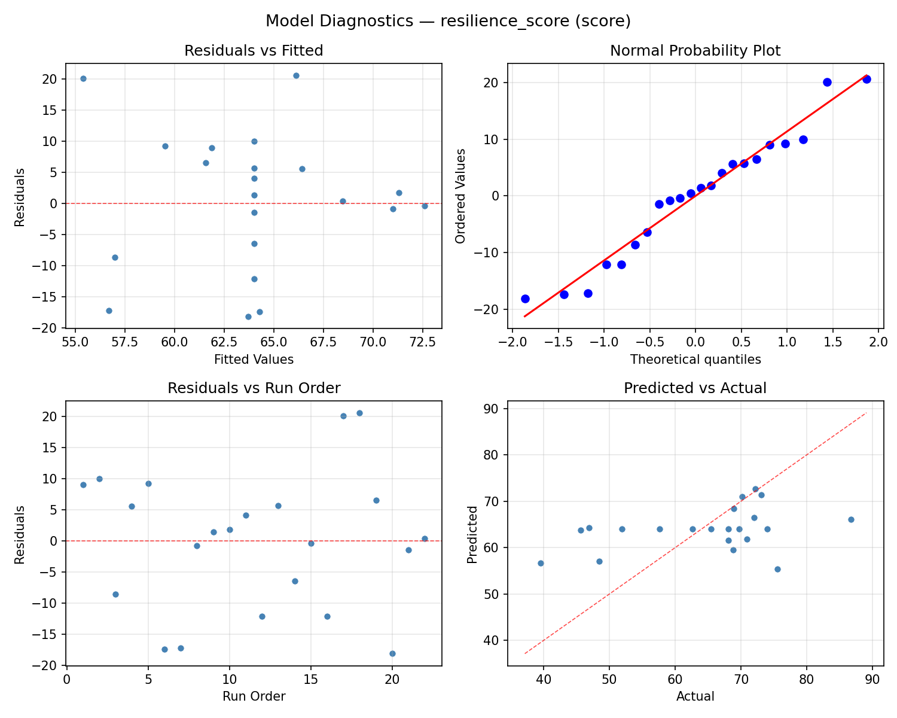
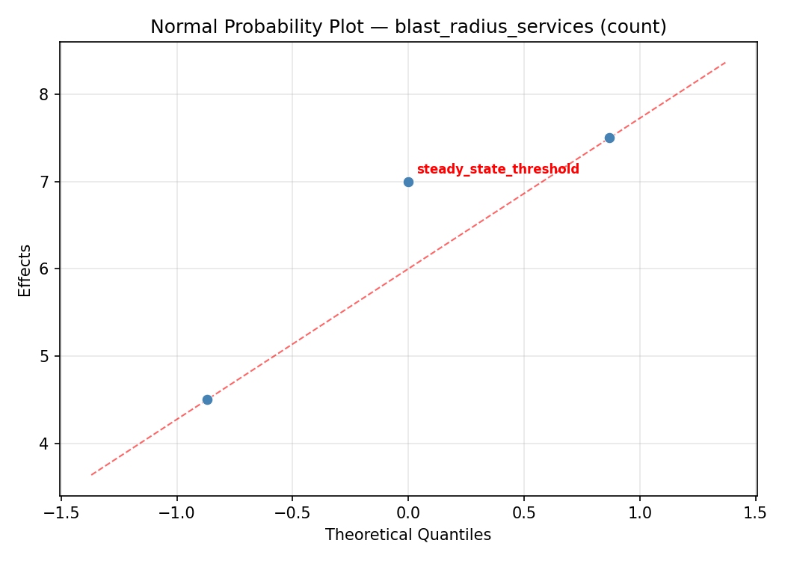
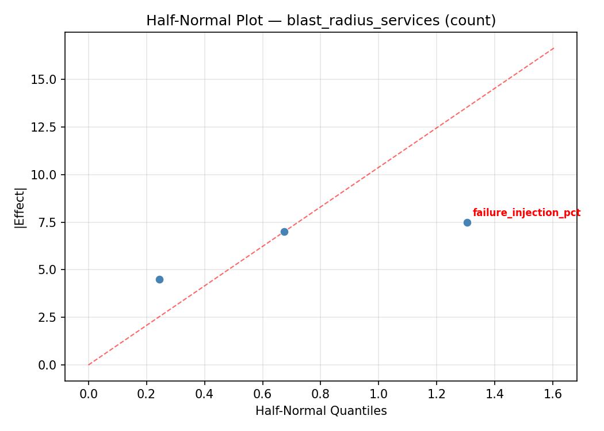
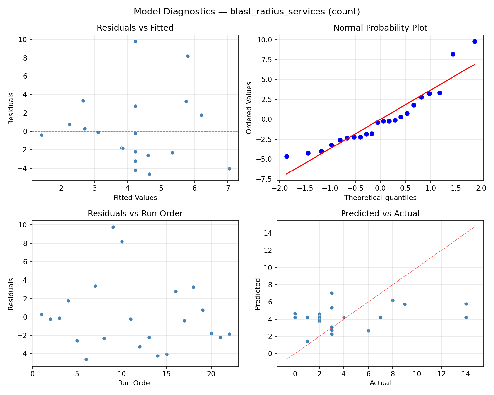

Summary
This experiment investigates chaos engineering blast radius. Central Composite design to optimize failure injection, experiment duration, and steady state threshold for resilience.
The design varies 3 factors: failure injection pct (%), ranging from 5 to 50, experiment duration min (min), ranging from 5 to 30, and steady state threshold (ratio), ranging from 0.9 to 0.99. The goal is to optimize 2 responses: resilience score (score) (maximize) and blast radius services (count) (minimize). Fixed conditions held constant across all runs include tool = litmus, target = microservices.
A Central Composite Design (CCD) was selected to fit a full quadratic response surface model, including curvature and interaction effects. With 3 factors this produces 22 runs including center points and axial (star) points that extend beyond the factorial range.
Quadratic response surface models were fitted to capture potential curvature and factor interactions. The RSM contour plots below visualize how pairs of factors jointly affect each response.
Key Findings
For resilience score, the most influential factors were experiment duration min (40.2%), steady state threshold (31.6%), failure injection pct (28.2%). The best observed value was 86.7 (at failure injection pct = 27.5, experiment duration min = 40.3218, steady state threshold = 0.945).
For blast radius services, the most influential factors were steady state threshold (41.9%), experiment duration min (41.0%), failure injection pct (17.1%). The best observed value was 0.0 (at failure injection pct = 5, experiment duration min = 30, steady state threshold = 0.9).
Recommended Next Steps
- Run confirmation experiments at the predicted optimal settings to validate the model.
- Consider whether any fixed factors should be varied in a future study.
Experimental Setup
Factors
| Factor | Low | High | Unit |
|---|
failure_injection_pct | 5 | 50 | % |
experiment_duration_min | 5 | 30 | min |
steady_state_threshold | 0.9 | 0.99 | ratio |
Fixed: tool = litmus, target = microservices
Responses
| Response | Direction | Unit |
|---|
resilience_score | ↑ maximize | score |
blast_radius_services | ↓ minimize | count |
Configuration
{
"metadata": {
"name": "Chaos Engineering Blast Radius",
"description": "Central Composite design to optimize failure injection, experiment duration, and steady state threshold for resilience"
},
"factors": [
{
"name": "failure_injection_pct",
"levels": [
"5",
"50"
],
"type": "continuous",
"unit": "%"
},
{
"name": "experiment_duration_min",
"levels": [
"5",
"30"
],
"type": "continuous",
"unit": "min"
},
{
"name": "steady_state_threshold",
"levels": [
"0.9",
"0.99"
],
"type": "continuous",
"unit": "ratio"
}
],
"fixed_factors": {
"tool": "litmus",
"target": "microservices"
},
"responses": [
{
"name": "resilience_score",
"optimize": "maximize",
"unit": "score"
},
{
"name": "blast_radius_services",
"optimize": "minimize",
"unit": "count"
}
],
"settings": {
"operation": "central_composite",
"test_script": "use_cases/86_chaos_engineering_blast_radius/sim.sh"
}
}
Experimental Matrix
The Central Composite Design produces 22 runs. Each row is one experiment with specific factor settings.
| Run | failure_injection_pct | experiment_duration_min | steady_state_threshold |
|---|
| 1 | 27.5 | 17.5 | 0.945 |
| 2 | 50 | 5 | 0.99 |
| 3 | 5 | 30 | 0.9 |
| 4 | 27.5 | 40.3218 | 0.945 |
| 5 | 27.5 | 17.5 | 0.945 |
| 6 | -13.5792 | 17.5 | 0.945 |
| 7 | 27.5 | 17.5 | 0.862842 |
| 8 | 27.5 | 17.5 | 0.945 |
| 9 | 50 | 30 | 0.9 |
| 10 | 68.5792 | 17.5 | 0.945 |
| 11 | 27.5 | 17.5 | 0.945 |
| 12 | 27.5 | -5.32177 | 0.945 |
| 13 | 27.5 | 17.5 | 0.945 |
| 14 | 5 | 5 | 0.99 |
| 15 | 27.5 | 17.5 | 0.945 |
| 16 | 50 | 5 | 0.9 |
| 17 | 27.5 | 17.5 | 1.02716 |
| 18 | 50 | 30 | 0.99 |
| 19 | 27.5 | 17.5 | 0.945 |
| 20 | 5 | 5 | 0.9 |
| 21 | 5 | 30 | 0.99 |
| 22 | 27.5 | 17.5 | 0.945 |
Step-by-Step Workflow
1
Preview the design
$ python doe.py info --config use_cases/86_chaos_engineering_blast_radius/config.json
2
Generate the runner script
$ python doe.py generate --config use_cases/86_chaos_engineering_blast_radius/config.json \
--output use_cases/86_chaos_engineering_blast_radius/results/run.sh --seed 42
3
Execute the experiments
$ bash use_cases/86_chaos_engineering_blast_radius/results/run.sh
4
Analyze results
$ python doe.py analyze --config use_cases/86_chaos_engineering_blast_radius/config.json
5
Get optimization recommendations
$ python doe.py optimize --config use_cases/86_chaos_engineering_blast_radius/config.json
6
Multi-objective optimization
With 2 competing responses, use --multi to find the best compromise via Derringer–Suich desirability.
$ python doe.py optimize --config use_cases/86_chaos_engineering_blast_radius/config.json --multi
7
Generate the HTML report
$ python doe.py report --config use_cases/86_chaos_engineering_blast_radius/config.json \
--output use_cases/86_chaos_engineering_blast_radius/results/report.html
Features Exercised
| Feature | Value |
|---|
| Design type | central_composite |
| Factor types | continuous (all 3) |
| Arg style | double-dash |
| Responses | 2 (resilience_score ↑, blast_radius_services ↓) |
| Total runs | 22 |
Analysis Results
Generated from actual experiment runs using the DOE Helper Tool.
Response: resilience_score
Top factors: experiment_duration_min (40.2%), steady_state_threshold (31.6%), failure_injection_pct (28.2%).
ANOVA
| Source | DF | SS | MS | F | p-value |
|---|
| Source | DF | SS | MS | F | p-value |
| failure_injection_pct | 4 | 413.7858 | 103.4465 | 0.462 | 0.7621 |
| experiment_duration_min | 4 | 506.0658 | 126.5165 | 0.565 | 0.6942 |
| steady_state_threshold | 4 | 396.9533 | 99.2383 | 0.444 | 0.7748 |
| Lack | of | Fit | 2 | 89.9762 | 44.9881 |
| Pure | Error | 7 | 1566.2988 | | |
| Error | 9 | 1656.2750 | 223.7570 | | |
| Total | 21 | 2973.0800 | 141.5752 | | |
Pareto Chart

Main Effects Plot

Normal Probability Plot of Effects

Half-Normal Plot of Effects

Model Diagnostics

Response: blast_radius_services
Top factors: steady_state_threshold (41.9%), experiment_duration_min (41.0%), failure_injection_pct (17.1%).
ANOVA
| Source | DF | SS | MS | F | p-value |
|---|
| Source | DF | SS | MS | F | p-value |
| failure_injection_pct | 4 | 51.6970 | 12.9242 | 1.119 | 0.4057 |
| experiment_duration_min | 4 | 129.6136 | 32.4034 | 2.805 | 0.0916 |
| steady_state_threshold | 4 | 127.6970 | 31.9242 | 2.763 | 0.0946 |
| Lack | of | Fit | 2 | 0.0000 | 0.0000 |
| Pure | Error | 7 | 80.8750 | | |
| Error | 9 | 18.8561 | 11.5536 | | |
| Total | 21 | 327.8636 | 15.6126 | | |
Pareto Chart

Main Effects Plot

Normal Probability Plot of Effects

Half-Normal Plot of Effects

Model Diagnostics

Response Surface Plots
3D surfaces fitted with quadratic RSM. Red dots are observed data points.
blast radius services experiment duration min vs steady state threshold

blast radius services failure injection pct vs experiment duration min

blast radius services failure injection pct vs steady state threshold

resilience score experiment duration min vs steady state threshold

resilience score failure injection pct vs experiment duration min

resilience score failure injection pct vs steady state threshold

Multi-Objective Optimization
When responses compete, Derringer–Suich desirability finds the best compromise.
Each response is scaled to a 0–1 desirability, then combined via a weighted geometric mean.
Overall Desirability
D = 0.7958
Per-Response Desirability
| Response | Weight | Desirability | Predicted | Dir |
|---|
resilience_score |
1.5 |
|
75.50 0.7388 75.50 score |
↑ |
blast_radius_services |
1.0 |
|
1.00 0.8896 1.00 count |
↓ |
Recommended Settings
| Factor | Value |
|---|
failure_injection_pct | 27.5 % |
experiment_duration_min | 40.3218 min |
steady_state_threshold | 0.945 ratio |
Source: from observed run #17
Trade-off Summary
Sacrifice = how much worse than single-objective best.
| Response | Predicted | Best Observed | Sacrifice |
|---|
blast_radius_services | 1.00 | 0.00 | +1.00 |
Top 3 Runs by Desirability
| Run | D | Factor Settings |
|---|
| #15 | 0.7079 | failure_injection_pct=5, experiment_duration_min=5, steady_state_threshold=0.99 |
| #2 | 0.7038 | failure_injection_pct=5, experiment_duration_min=30, steady_state_threshold=0.99 |
Model Quality
| Response | R² | Type |
|---|
blast_radius_services | 0.0063 | linear |
Full Multi-Objective Output
============================================================
MULTI-OBJECTIVE OPTIMIZATION
Method: Derringer-Suich Desirability Function
============================================================
Overall desirability: D = 0.7958
Response Weight Desirability Predicted Direction
---------------------------------------------------------------------
resilience_score 1.5 0.7388 75.50 score ↑
blast_radius_services 1.0 0.8896 1.00 count ↓
Recommended settings:
failure_injection_pct = 27.5 %
experiment_duration_min = 40.3218 min
steady_state_threshold = 0.945 ratio
(from observed run #17)
Trade-off summary:
resilience_score: 75.50 (best observed: 86.70, sacrifice: +11.20)
blast_radius_services: 1.00 (best observed: 0.00, sacrifice: +1.00)
Model quality:
resilience_score: R² = 0.3924 (quadratic)
blast_radius_services: R² = 0.0063 (linear)
Top 3 observed runs by overall desirability:
1. Run #17 (D=0.7958): failure_injection_pct=27.5, experiment_duration_min=40.3218, steady_state_threshold=0.945
2. Run #15 (D=0.7079): failure_injection_pct=5, experiment_duration_min=5, steady_state_threshold=0.99
3. Run #2 (D=0.7038): failure_injection_pct=5, experiment_duration_min=30, steady_state_threshold=0.99
Full Analysis Output
=== Main Effects: resilience_score ===
Factor Effect Std Error % Contribution
--------------------------------------------------------------
experiment_duration_min 27.5000 2.5368 40.2%
steady_state_threshold 21.5750 2.5368 31.6%
failure_injection_pct 19.3000 2.5368 28.2%
=== ANOVA Table: resilience_score ===
Source DF SS MS F p-value
-----------------------------------------------------------------------------
failure_injection_pct 4 413.7858 103.4465 0.462 0.7621
experiment_duration_min 4 506.0658 126.5165 0.565 0.6942
steady_state_threshold 4 396.9533 99.2383 0.444 0.7748
Lack of Fit 2 89.9762 44.9881 0.201 0.8224
Pure Error 7 1566.2988 223.7570
Error 9 1656.2750 223.7570
Total 21 2973.0800 141.5752
=== Summary Statistics: resilience_score ===
failure_injection_pct:
Level N Mean Std Min Max
------------------------------------------------------------
-13.5792 1 68.8000 0.0000 68.8000 68.8000
27.5 12 63.0667 14.2747 39.5000 86.7000
5 4 71.2000 2.3367 68.9000 74.0000
50 4 61.4250 10.0244 46.9000 68.1000
68.5792 1 51.9000 0.0000 51.9000 51.9000
experiment_duration_min:
Level N Mean Std Min Max
------------------------------------------------------------
-5.32177 1 73.1000 0.0000 73.1000 73.1000
17.5 12 63.2333 13.4601 39.5000 86.7000
30 4 68.4000 4.6669 62.6000 74.0000
40.3218 1 45.6000 0.0000 45.6000 45.6000
5 4 64.2250 11.6726 46.9000 72.2000
steady_state_threshold:
Level N Mean Std Min Max
------------------------------------------------------------
0.862842 1 65.4000 0.0000 65.4000 65.4000
0.9 4 69.9750 2.7873 68.1000 74.0000
0.945 12 63.6417 14.0599 39.5000 86.7000
0.99 4 62.6500 11.2299 46.9000 72.2000
1.02716 1 48.4000 0.0000 48.4000 48.4000
=== Main Effects: blast_radius_services ===
Factor Effect Std Error % Contribution
--------------------------------------------------------------
steady_state_threshold 12.2500 0.8424 41.9%
experiment_duration_min 12.0000 0.8424 41.0%
failure_injection_pct 5.0000 0.8424 17.1%
=== ANOVA Table: blast_radius_services ===
Source DF SS MS F p-value
-----------------------------------------------------------------------------
failure_injection_pct 4 51.6970 12.9242 1.119 0.4057
experiment_duration_min 4 129.6136 32.4034 2.805 0.0916
steady_state_threshold 4 127.6970 31.9242 2.763 0.0946
Lack of Fit 2 0.0000 0.0000 0.000 1.0000
Pure Error 7 80.8750 11.5536
Error 9 18.8561 11.5536
Total 21 327.8636 15.6126
=== Summary Statistics: blast_radius_services ===
failure_injection_pct:
Level N Mean Std Min Max
------------------------------------------------------------
-13.5792 1 2.0000 0.0000 2.0000 2.0000
27.5 12 5.3333 4.9052 0.0000 14.0000
5 4 2.7500 0.9574 2.0000 4.0000
50 4 2.2500 1.7078 0.0000 4.0000
68.5792 1 7.0000 0.0000 7.0000 7.0000
experiment_duration_min:
Level N Mean Std Min Max
------------------------------------------------------------
-5.32177 1 14.0000 0.0000 14.0000 14.0000
17.5 12 4.7500 4.1369 0.0000 14.0000
30 4 3.0000 1.1547 2.0000 4.0000
40.3218 1 2.0000 0.0000 2.0000 2.0000
5 4 2.0000 1.4142 0.0000 3.0000
steady_state_threshold:
Level N Mean Std Min Max
------------------------------------------------------------
0.862842 1 14.0000 0.0000 14.0000 14.0000
0.9 4 3.2500 0.9574 2.0000 4.0000
0.945 12 4.6667 4.1851 0.0000 14.0000
0.99 4 1.7500 1.2583 0.0000 3.0000
1.02716 1 3.0000 0.0000 3.0000 3.0000
Optimization Recommendations
=== Optimization: resilience_score ===
Direction: maximize
Best observed run: #18
failure_injection_pct = 27.5
experiment_duration_min = 40.3218
steady_state_threshold = 0.945
Value: 86.7
RSM Model (linear, R² = 0.1534, Adj R² = 0.0123):
Coefficients:
intercept +64.0000
failure_injection_pct +4.6920
experiment_duration_min +0.8864
steady_state_threshold +2.8806
RSM Model (quadratic, R² = 0.4209, Adj R² = -0.0134):
Coefficients:
intercept +60.3974
failure_injection_pct +4.6920
experiment_duration_min +0.8864
steady_state_threshold +2.8805
failure_injection_pct*experiment_duration_min +2.4000
failure_injection_pct*steady_state_threshold -2.6500
experiment_duration_min*steady_state_threshold +3.4000
failure_injection_pct^2 -1.2237
experiment_duration_min^2 +5.0313
steady_state_threshold^2 +1.5963
Curvature analysis:
experiment_duration_min coef=+5.0313 convex (has a minimum)
steady_state_threshold coef=+1.5963 convex (has a minimum)
failure_injection_pct coef=-1.2237 concave (has a maximum)
Notable interactions:
experiment_duration_min*steady_state_threshold coef=+3.4000 (synergistic)
failure_injection_pct*steady_state_threshold coef=-2.6500 (antagonistic)
failure_injection_pct*experiment_duration_min coef=+2.4000 (synergistic)
Predicted optimum (from linear model, at observed points):
failure_injection_pct = 68.5792
experiment_duration_min = 17.5
steady_state_threshold = 0.945
Predicted value: 72.5664
Surface optimum (via L-BFGS-B, linear model):
failure_injection_pct = 50
experiment_duration_min = 30
steady_state_threshold = 0.99
Predicted value: 72.4590
Model quality: Weak fit — consider adding center points or using a different design.
Factor importance:
1. failure_injection_pct (effect: 30.5, contribution: 43.2%)
2. experiment_duration_min (effect: 27.1, contribution: 38.4%)
3. steady_state_threshold (effect: 13.0, contribution: 18.5%)
=== Optimization: blast_radius_services ===
Direction: minimize
Best observed run: #6
failure_injection_pct = 5
experiment_duration_min = 30
steady_state_threshold = 0.9
Value: 0.0
RSM Model (linear, R² = 0.0367, Adj R² = -0.1238):
Coefficients:
intercept +4.2273
failure_injection_pct +0.1038
experiment_duration_min +0.2577
steady_state_threshold +0.8626
RSM Model (quadratic, R² = 0.1755, Adj R² = -0.4428):
Coefficients:
intercept +5.4773
failure_injection_pct +0.1038
experiment_duration_min +0.2577
steady_state_threshold +0.8626
failure_injection_pct*experiment_duration_min -0.1250
failure_injection_pct*steady_state_threshold +0.6250
experiment_duration_min*steady_state_threshold +0.1250
failure_injection_pct^2 -0.3750
experiment_duration_min^2 -0.0750
steady_state_threshold^2 -1.4250
Curvature analysis:
steady_state_threshold coef=-1.4250 concave (has a maximum)
failure_injection_pct coef=-0.3750 concave (has a maximum)
experiment_duration_min coef=-0.0750 negligible curvature
Notable interactions:
failure_injection_pct*steady_state_threshold coef=+0.6250 (synergistic)
Predicted optimum (from linear model, at observed points):
failure_injection_pct = 27.5
experiment_duration_min = 17.5
steady_state_threshold = 1.02716
Predicted value: 5.8022
Surface optimum (via L-BFGS-B, linear model):
failure_injection_pct = 5
experiment_duration_min = 5
steady_state_threshold = 0.9
Predicted value: 3.0031
Model quality: Weak fit — consider adding center points or using a different design.
Factor importance:
1. experiment_duration_min (effect: 7.0, contribution: 44.2%)
2. steady_state_threshold (effect: 5.3, contribution: 33.7%)
3. failure_injection_pct (effect: 3.5, contribution: 22.1%)